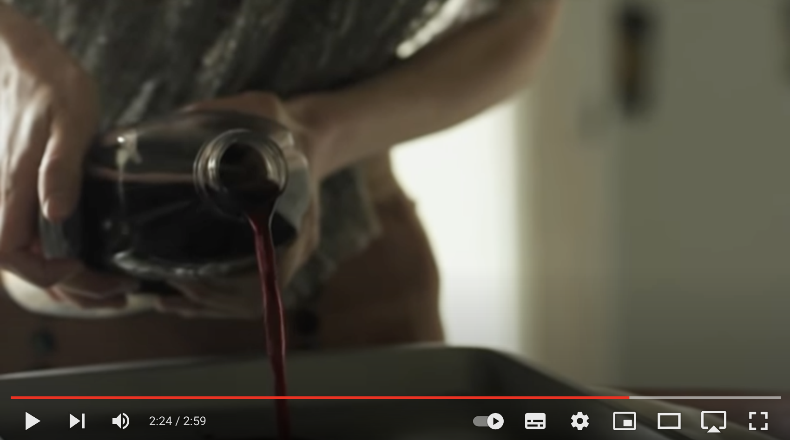
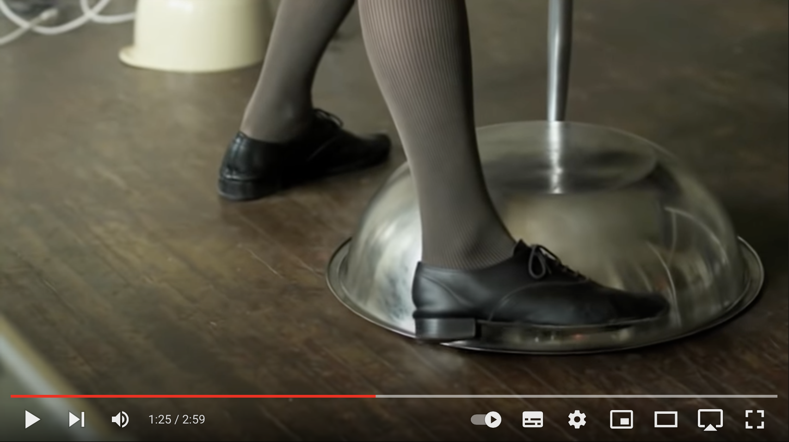
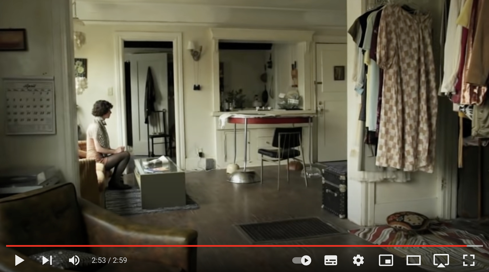

A HANDY TIP FOR THE EASILY DISTRACTED



Decription
The acclaimed author, artist and filmmaker dreams - Miranda July - up an idiosyncratic solution to the interruptions of modern life.
One of my favourite artist, check out the video on youtube.
Ingredients
- distracting items (phone, laptop, magazine)
- bowls (different sizes)
- a table
- a precious thing (e.g. a white dress)
- a baking tray
- red berry juice
Steps
- Collect the distracting items.
- Trap them.(Put the bowls over the distracting items. Put each table leg on a bowl)
- Choose a precious thing. This is your hostage. (Lay the white dress on the table)
- Put your hostage in danger. (Put the baking tray on the dress. Pour red berry juice in the baking tray.)
- You are free. Go be productive.